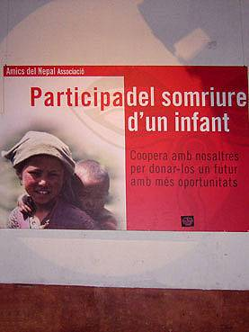
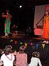
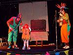
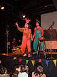
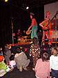
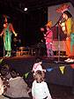
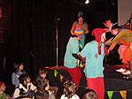

imatges
del 'Forat dels Somnis'
'
Un nas al Nepal
' del 18 de febrer 2007







totes les imatges
Salut i foc!!!!
Diables de Sant Andreu
carrer Ramon i Batlle, 9
Sant Andreu de Palomar
imatges de Diables
qui som i perquè
incendi
contacta'ns
NO anirem a Can Galta Cremada
tornar